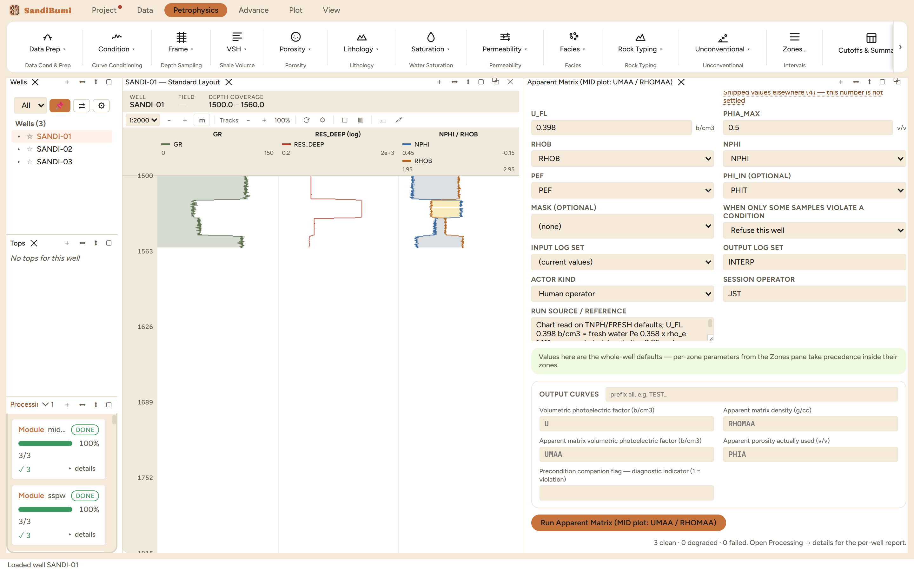

Apparent matrix identification: the module computes RHOMAA, the apparent matrix density, and UMAA, the apparent matrix volumetric photoelectric factor, which are the two axes of the classic matrix identification (MID) crossplot. Plot UMAA against RHOMAA, switch on the Lith-6 chart overlay, and each sample lands near the mineral its matrix actually is: quartz, calcite, dolomite, or a mix. Reach for it when lithology is the question the porosity chapters keep begging: before choosing a matrix density, run this and let the rock vote.
The photoelectric factor is converted to a volumetric one, U = PEF · ρe with ρe = (RHOB + 0.1883)/1.0704, and then the fluid is removed from both measurements:
RHOMAA = (RHOB − φ·RHO_FL) / (1 − φ) UMAA = (U − φ·U_FL) / (1 − φ)
Everything hinges on φ, the apparent porosity, which is the one judgement call in the method. The default CHART basis reads it off the density-neutron crossplot the way you would by hand on the chartbook: it finds the porosity at which the density and the neutron imply the same matrix, interpolating across the sandstone, limestone and dolomite curve families. The alternative XPLOT basis is the analytic average some commercial suites take, kept for comparison: it drags every point toward the assumed matrix density instead of solving for it.
3 clean. Medians: RHOMAA 2.9541 g/cc, UMAA 9.6456 b/cm3, with the apparent porosity the chart read actually used at 0.2642. A median RHOMAA well above quartz is this shaly section speaking: clay minerals carry heavier matrix densities and higher U than quartz, so the section's mid-point sits toward the clay corner of the MID plot, and the sands resolve toward quartz only when you crossplot the points rather than the median.
SELECT round(median(value), 4) FROM computed_curves WHERE curve_name = 'RHOMAA' AND NOT isnan(value)
The basis switch, measured: XPLOT on the same picks moves the medians to RHOMAA 2.9073, UMAA 9.4343, φ 0.2457. Every point drags toward the assumed RHO_MA_A, about 0.05 g/cc and 0.2 b/cm3 here, which on the MID plot is a real fraction of the quartz-to-calcite separation. Two suites showing different mineral mixes for the same well can differ by nothing more than this switch. Restored to CHART, every number returns exactly.
